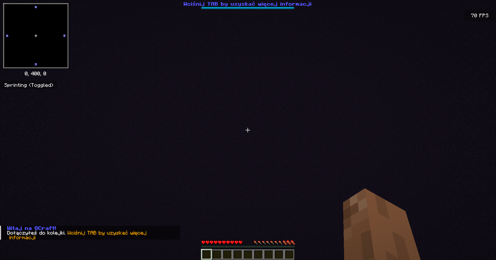

Spokojnie, rozumiemy, że nasz serwer jest bardzo skomplikowany i zaawansowany by umożliwić graczom mistrzowskie bezpieczeństwo i komfort korzystania.
W tym poradniku dowiesz się wszystkiego co jest ci potrzebne by zacząć grę na GCraft'cie
Po dołączeniu powinniście dołączyć do pustego świata, czyli poczekalni:
Jeżeli serwer jest pełny, zostaniesz do niego przekierowany gdy zwolni się miejsce. Tak przy okazji - czy wiesz, że gracze wyżsi w randze mają zarezerwowane miejsca na serwerze? Zakupić rangi możesz w sklepie.
Przed zagraniem, musisz się zarejestrować używając hasła - hasła objęte są enkrypcją i nawet administratorzy nie mają do nich dostępu, ale mimo to zaleca się wybranie hasła odmiennego od haseł w innych usługach. Po zalogowaniu możesz użyć selektora trybów (przedmiotu który otrzymałeś(-aś) na środku paska wyboru) do wybrania trybu na którym chcesz grać